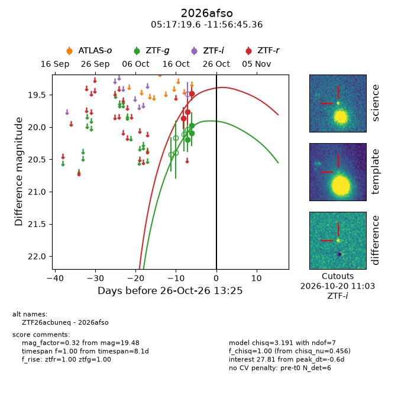
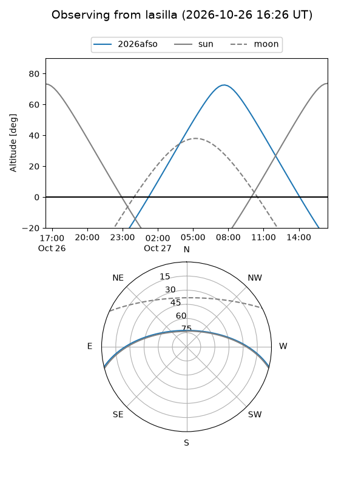
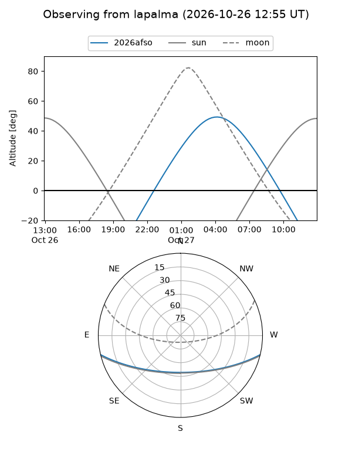
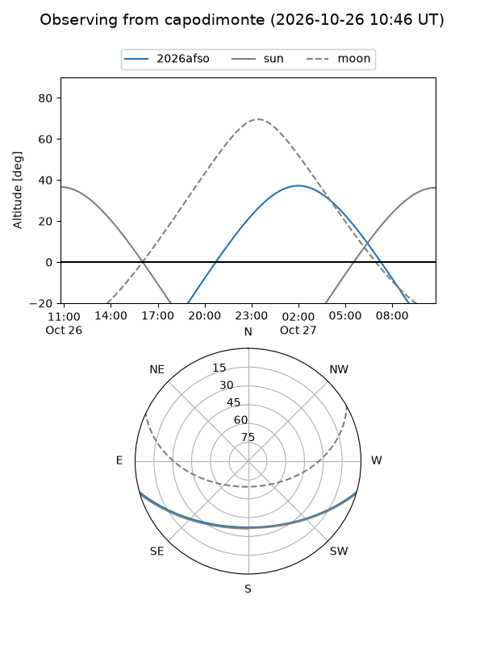
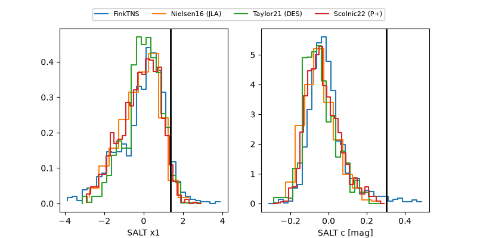

2026afso
Target 2026afso at 2026-10-27 01:21
Aliases and brokers:
FINK-ZTF: ztf.fink-portal.org/ZTF26acbuneq
Lasair-ZTF: lasair-ztf.lsst.ac.uk/objects/ZTF26acbuneq
ALeRCE-ZTF: alerce.online/object/ZTF26acbuneq
YSE-PZ: ziggy.ucolick.org/yse/transient_detail/2026afso
TNS name: wis-tns.org/object/2026afso
Direct TNS query: direct search
alt names
ZTF26acbuneq (ztf,fink_ztf)
2026afso (tns,yse)
Coordinates:
equatorial (ra, dec) = 79.3316,-11.94593
equatorial (HMS+DMS) = 05:17:19.58,-11:56:45.36
galactic (l, b) = (213.3236,-26.22955)
Flags:
peak dt: -0.1
Photometry:
last ztfg=19.98, ztfr=19.48
3 ztfg, 3 ztfr detections
Lightcurve

Visibility



Additional plots
